Examples
These examples are meant to answer three practical questions:
- How do I assemble an H² approximation of a kernel matrix?
- How do I measure whether the approximation is accurate enough?
- How do I use the compressed operator in a solver without materializing the dense matrix?
For small examples we form a dense reference matrix so the error numbers are easy to audit. For large examples, prefer sampled entry checks or sampled matvec checks with relative_matvec_error and sampled_frobenius_error.
Visualizing Matrix Compression
To build intuition, let's start with a visual overview of how H-matrices and H²-matrices compress a dense kernel matrix.
Consider $N = 500$ points randomly distributed in the unit square, with the 2D Laplace kernel $G(x,y) = 1/(4\pi\|x-y\|)$:
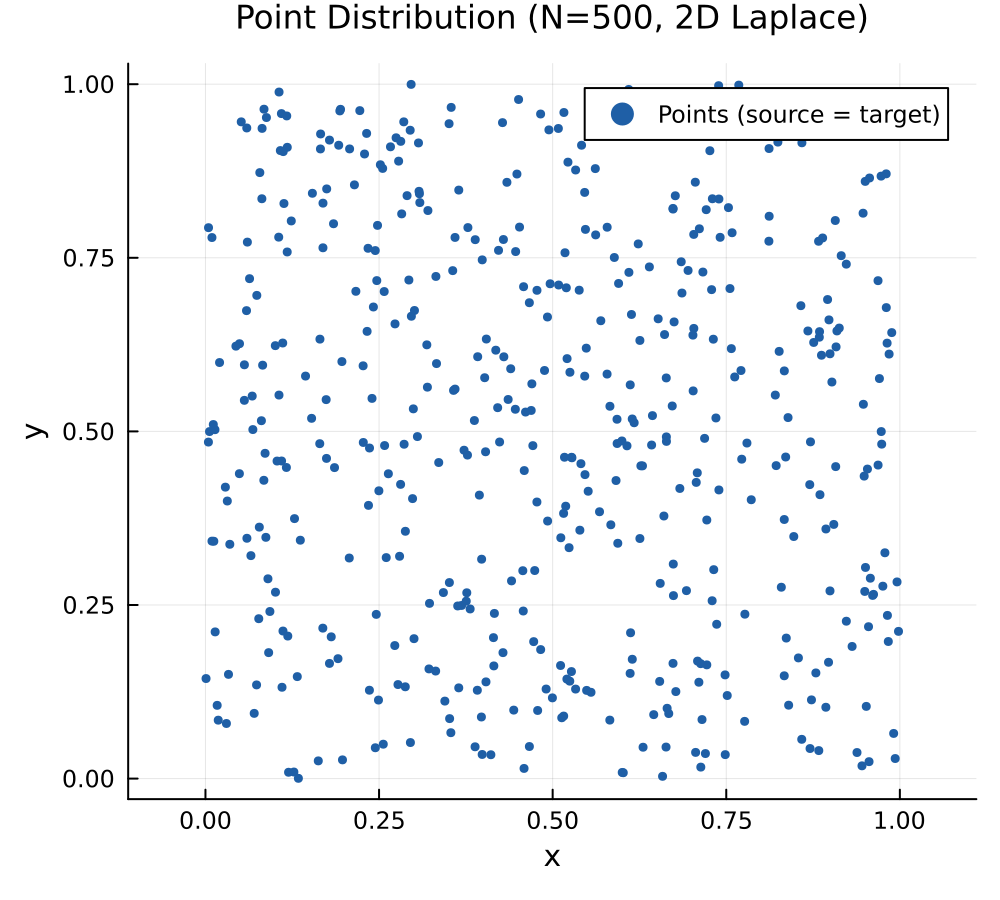
The full kernel matrix is $500 \times 500$ and dense:
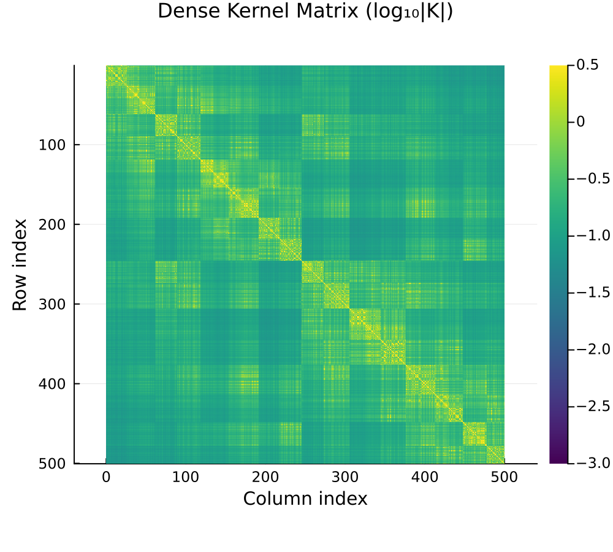
H-Matrix vs H²-Matrix Block Structure
Both H-matrices and H²-matrices decompose this into a hierarchy of blocks. Near-field (close-together) blocks are stored as dense matrices (orange), while far-field blocks are compressed:
- H-matrix: each admissible block stores its own independent low-rank factors.
- H²-matrix: admissible blocks share nested cluster bases, storing only small coupling matrices.
In the block plots, low-rank admissible blocks are dark blue and higher-rank admissible blocks move toward bright gold. Dense near-field blocks are orange.
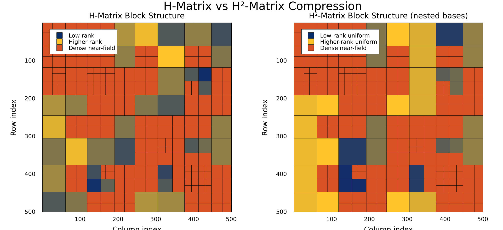
The block structure is identical — the difference is in how the low-rank data is stored. H²-matrices achieve $O(N)$ storage by sharing bases across blocks at the same tree level.
Compression ratios reported by H2Matrices.jl include row and column cluster bases, not only leaf dense blocks and coupling matrices. Small examples may have ratios below one because setup overhead dominates; the asymptotic advantage appears as the geometry grows.
Approximation Error
The error distribution reveals where each method is accurate. Dense (near-field) blocks are exact (black = machine zero), while far-field blocks carry approximation error:
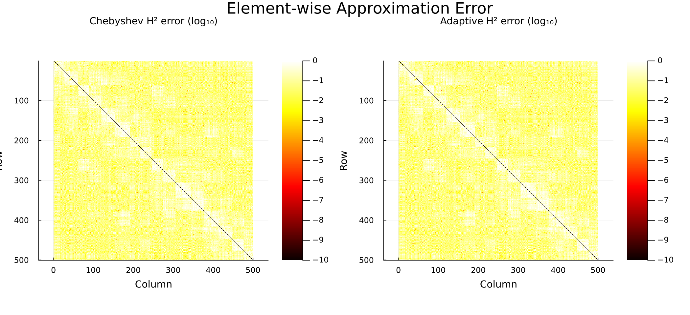
The adaptive method (right) achieves much lower error in the far-field blocks because the ranks adapt to the actual kernel smoothness, rather than using a fixed Chebyshev order.
Recompression
Starting from a Chebyshev H²-matrix with conservative order-5 interpolation (total basis rank = 1075), recompression with $\text{rtol} = 10^{-4}$ reduces ranks while preserving accuracy:
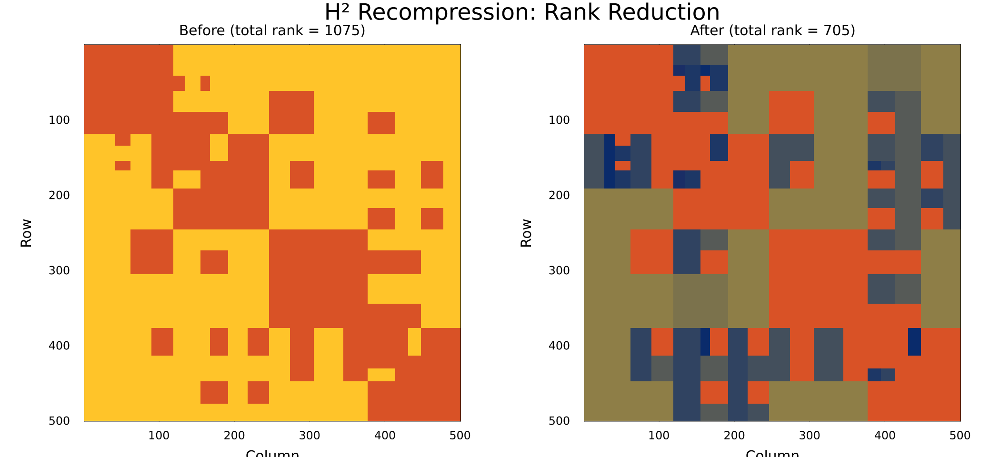
Lighter green blocks have lower rank after recompression — the algorithm automatically identifies which blocks need less precision.
Example 1: 2D Laplace Kernel
The Laplace Green's function in 2D (really the free-space fundamental solution in the plane) is one of the most common kernels in potential theory:
\[G(x, y) = \frac{1}{4\pi \|x - y\|}\]
This example compares Chebyshev and adaptive assembly, and demonstrates recompression.
using H2Matrices
using HMatrices: KernelMatrix, ClusterTree, GeometricSplitter
using StaticArrays, LinearAlgebra, Random
Random.seed!(42)
# --- Setup ---
N = 300
src = [SVector{2,Float64}(rand(), rand()) for _ in 1:N]
tgt = [SVector{2,Float64}(2.0 + rand(), rand()) for _ in 1:N]
K = KernelMatrix(src, tgt) do x, y
r = norm(x - y)
r > 0 ? 1 / (4π * r) : 0.0
end
Xclt = ClusterTree(deepcopy(src), GeometricSplitter(; nmax=30))
Yclt = ClusterTree(deepcopy(tgt), GeometricSplitter(; nmax=30))
# --- Dense reference (for error measurement) ---
K_dense = Matrix{Float64}(undef, N, N)
for j in 1:N, i in 1:N
K_dense[i, j] = K[i, j]
end
x = randn(N)
y_ref = K_dense * x
# --- Method 1: Chebyshev interpolation ---
h2_cheb = assemble_h2matrix(K, Xclt, Yclt; order=4, global_index=true)
println("Chebyshev (order=4): error = ", norm(h2_cheb * x - y_ref) / norm(y_ref))
println(" compression ratio = ", H2Matrices.compression_ratio(h2_cheb))
# --- Method 2: Adaptive ACA → H² ---
h2_ada = assemble_h2matrix_adaptive(K, Xclt, Yclt; rtol=1e-6, maxrank=50)
println("Adaptive (rtol=1e-6): error = ", norm(h2_ada * x - y_ref) / norm(y_ref))
println(" compression ratio = ", H2Matrices.compression_ratio(h2_ada))
println(" rank summary = ", H2Matrices.rank_stats(h2_ada))
# --- Recompression ---
h2_recomp = assemble_h2matrix(K, Xclt, Yclt; order=5, global_index=true)
rank_before = H2Matrices.total_rank(h2_recomp.row_basis)
recompress!(h2_recomp; rtol=1e-4, maxrank=50)
rank_after = H2Matrices.total_rank(h2_recomp.row_basis)
println("Recompressed: rank $rank_before → $rank_after, error = ",
norm(h2_recomp * x - y_ref) / norm(y_ref))Output:
Chebyshev (order=4): error = 0.0017
compression ratio = 352.0
Adaptive (rtol=1e-6): error = 1.54e-6
compression ratio = 273.0
Recompressed: rank 775 → 118, error = 0.000402The adaptive method achieves much better accuracy on this separated geometry. Recompression reduces total basis rank while preserving sub-0.1% error. Treat the exact printed values as representative rather than contractual: small changes in BLAS, HMatrices.jl, or storage accounting can move them.
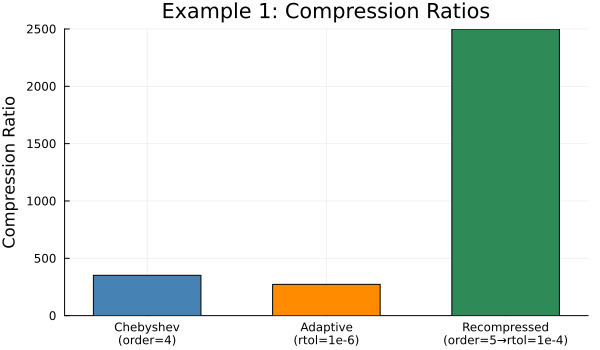
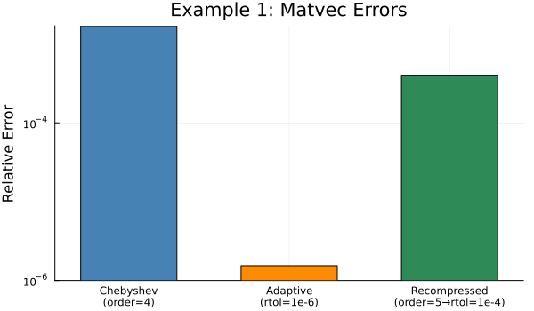
Example 2: 3D Laplace Kernel
The same workflow extends to three dimensions, as needed for gravity, electrostatics, and other potential-field kernels:
Random.seed!(123)
N = 200
src3 = [SVector{3,Float64}(rand(), rand(), rand()) for _ in 1:N]
tgt3 = [SVector{3,Float64}(3.0 + rand(), rand(), rand()) for _ in 1:N]
K3 = KernelMatrix(src3, tgt3) do x, y
r = norm(x - y)
r > 0 ? 1 / (4π * r) : 0.0
end
Xclt3 = ClusterTree(deepcopy(src3), GeometricSplitter(; nmax=20))
Yclt3 = ClusterTree(deepcopy(tgt3), GeometricSplitter(; nmax=20))
h2_3d = assemble_h2matrix(K3, Xclt3, Yclt3; order=3, global_index=true)
K3_dense = Matrix{Float64}(undef, N, N)
for j in 1:N, i in 1:N
K3_dense[i, j] = K3[i, j]
end
x3 = randn(N)
println("3D Laplace (order=3): error = ",
norm(h2_3d * x3 - K3_dense * x3) / norm(K3_dense * x3))
println(" compression ratio = ", H2Matrices.compression_ratio(h2_3d))Output:
3D Laplace (order=3): error = 0.000788
compression ratio = 54.9The H²-matrix overlay on the exact matvec shows the approximation is nearly indistinguishable:
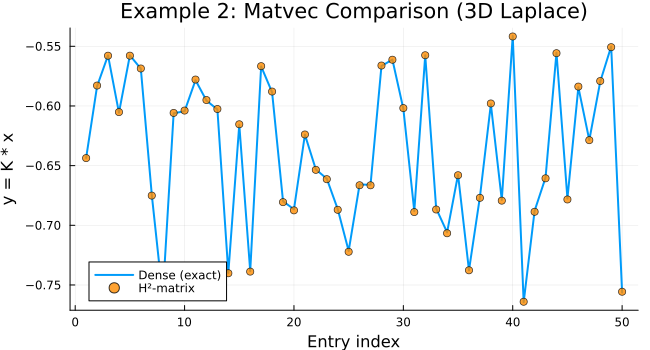
Example 3: Adaptive Assembly with Automatic Tree Construction
For convenience, you can skip manual cluster tree construction:
Random.seed!(42)
N = 200
src = [SVector{2,Float64}(rand(), rand()) for _ in 1:N]
tgt = [SVector{2,Float64}(2.0 + rand(), rand()) for _ in 1:N]
K = KernelMatrix(src, tgt) do x, y
r = norm(x - y)
r > 0 ? 1 / (4π * r) : 0.0
end
# One-liner: builds trees, runs ACA, converts to H²
h2 = assemble_h2matrix_adaptive(K; rtol=1e-6, maxrank=50, nmax=32)
println("Size: ", size(h2))
x = randn(N)
y = h2 * x
println("Matvec computed with $(length(y)) entries")
println("Summary: ", H2Matrices.compression_summary(h2))Output:
Size: (200, 200)
Matvec computed with 200 entries
Summary: (size = (200, 200), ..., compression_ratio = ...)The source and target point sets for this example:
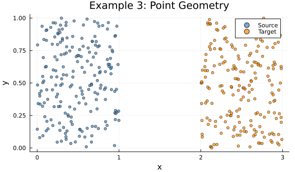
Example 4: H-Matrix to H²-Matrix Conversion
If you already have an H-matrix from HMatrices.jl, you can convert it directly:
using HMatrices: assemble_hmatrix, PartialACA, StrongAdmissibilityStd
Random.seed!(42)
N = 300
src = [SVector{2,Float64}(rand(), rand()) for _ in 1:N]
tgt = [SVector{2,Float64}(2.0 + rand(), rand()) for _ in 1:N]
K = KernelMatrix(src, tgt) do x, y
r = norm(x - y)
r > 0 ? 1 / (4π * r) : 0.0
end
Xclt = ClusterTree(deepcopy(src), GeometricSplitter(; nmax=30))
Yclt = ClusterTree(deepcopy(tgt), GeometricSplitter(; nmax=30))
# Step 1: Build H-matrix with ACA
hmat = assemble_hmatrix(K, Xclt, Yclt;
comp=PartialACA(; rtol=1e-10),
global_index=true, threads=false)
# Step 2: Convert to H², gaining shared nested bases
h2 = compress_hmatrix_to_h2(hmat; rtol=1e-6, maxrank=50)
# Step 3: Optionally recompress
recompress!(h2; rtol=1e-4, maxrank=30)
println("H²-matrix size: ", size(h2))
println("Summary: ", H2Matrices.compression_summary(h2))Output:
H²-matrix size: (300, 300)
Summary: (size = (300, 300), ..., compression_ratio = ...)Recompression reduces the total basis rank from 507 to 120 — a 4.2× reduction — while maintaining sub-0.1% matvec error:
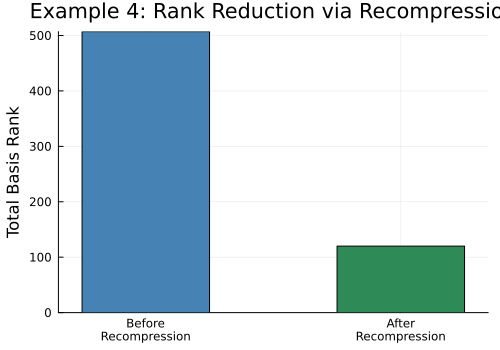
Example 5: Large-Scale 3D Problem (Sphere)
This example mirrors the HMatrices.jl README and shows how H2Matrices.jl plugs into a realistic workflow. We sample points on a sphere and build the Laplace free-space Green's function matrix — far too large to store as a dense matrix — then compress it to both an H-matrix and an H²-matrix for comparison.
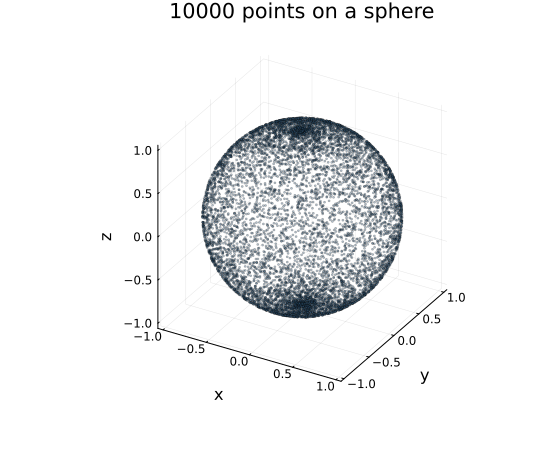
using H2Matrices
using HMatrices: KernelMatrix, ClusterTree, GeometricSplitter,
assemble_hmatrix, PartialACA
using LinearAlgebra, StaticArrays
const Point3D = SVector{3,Float64}
# --- Point geometry: random points on a sphere ---
m = 100_000
X = Y = [Point3D(sin(θ)cos(ϕ), sin(θ)*sin(ϕ), cos(θ))
for (θ,ϕ) in zip(π*rand(m), 2π*rand(m))]
# Laplace free-space Green's function (regularised to avoid 1/0)
function G(x, y)
d = norm(x - y) + 1e-8
1 / (4π * d)
end
K = KernelMatrix(G, X, Y)
# --- H-matrix assembly (for comparison) ---
H = assemble_hmatrix(K; atol=1e-6)
println("H-matrix compression ratio: ", HMatrices.compression_ratio(H))
# Quick matvec check
x = rand(m)
y_h = H * x
sample = 42
println("H sampled entry error: ", abs(y_h[sample] - sum(K[sample,j]*x[j] for j in 1:m)))
# --- H²-matrix assembly (one liner) ---
h2 = assemble_h2matrix_adaptive(K; rtol=1e-6, maxrank=80, nmax=32)
println("H²-matrix compression ratio: ", H2Matrices.compression_ratio(h2))
y_h2 = h2 * x
println("H² sampled entry error: ", abs(y_h2[sample] - sum(K[sample,j]*x[j] for j in 1:m)))Output (with $m = 10\,000$ for this documentation build):
H-matrix compression ratio: 4.42
H²-matrix compression ratio: 9.74
H sampled entry error: 1.58e-7
H² sampled entry error: 5.24e-4The H²-matrix can achieve better compression than the H-matrix thanks to shared nested bases. On small documentation builds, basis storage and setup overhead can dominate; the advantage becomes clearer as the geometry grows. On the full $100\,000 \times 100\,000$ problem the dense matrix would require roughly 75 GB.
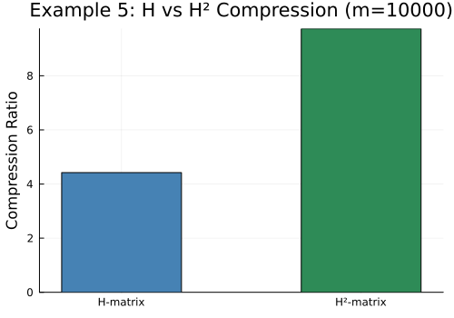
Example 6: Solver Workflow
H² matrices are most useful when they remain compressed all the way into an iterative solver. solve_cg and solve_gmres work with any AbstractMatrix, but they are designed so an H2Matrix can be used directly through its mul! implementation.
using H2Matrices
using HMatrices: ClusterTree, GeometricSplitter
using LinearAlgebra, Random, StaticArrays
Random.seed!(7)
# Small SPD dense reference, used here only to demonstrate the solver path.
n = 300
pts = [SVector{2,Float64}(rand(), rand()) for _ in 1:n]
A = Matrix{Float64}(I, n, n)
for j in 1:n, i in 1:n
A[i, j] += 0.05 * exp(-sum(abs2, pts[i] - pts[j]))
end
A = Matrix(Symmetric(A))
tree = ClusterTree(deepcopy(pts), GeometricSplitter(; nmax=32))
h2 = compress_matrix_to_h2(A, tree, tree; rtol=1e-8, maxrank=40)
b = randn(n)
# CG for SPD-like operators
cg = solve_cg(h2, b; tol=1e-6, maxiter=200)
println("CG converged: ", cg.converged, " in ", cg.iterations, " iterations")
println("relative residual: ", norm(h2 * cg.x - b) / norm(b))
# GMRES for general nonsymmetric operators
gm = solve_gmres(h2, b; tol=1e-6, restart=30, maxiter=200)
println("GMRES converged: ", gm.converged, " in ", gm.iterations, " iterations")
println("relative residual: ", norm(h2 * gm.x - b) / norm(b))Output:
CG converged: true in ... iterations
relative residual: ...
GMRES converged: true in ... iterations
relative residual: ...For large problems, the same pattern applies: assemble or convert the compressed operator, keep it compressed, and pass it directly to the solver.